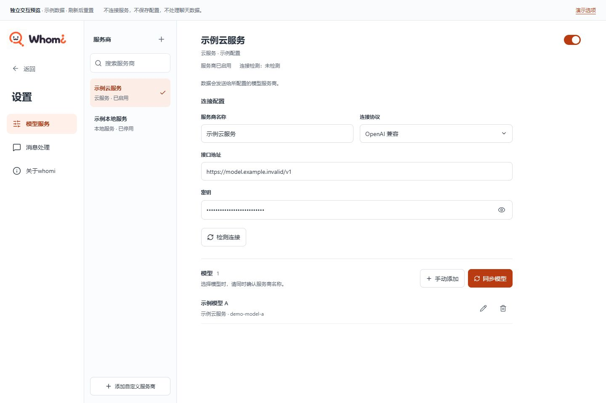
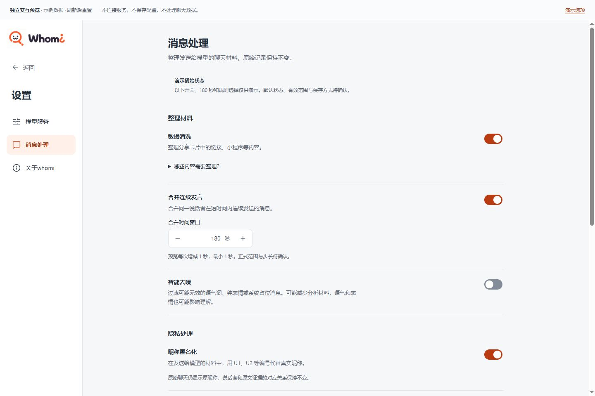
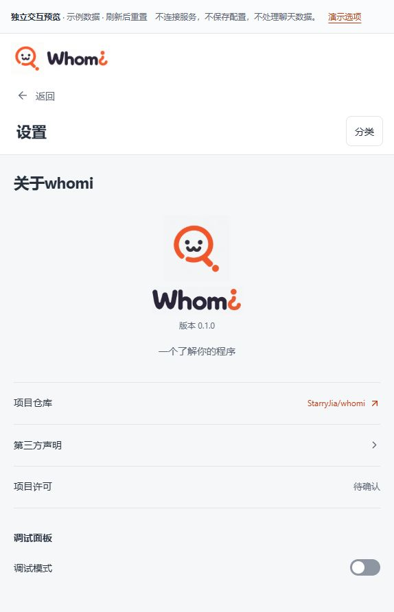
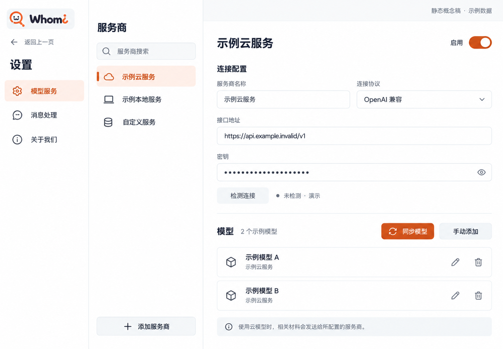
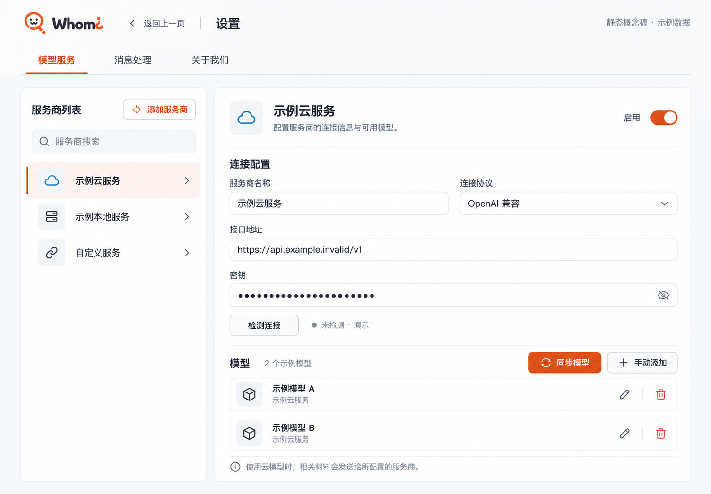
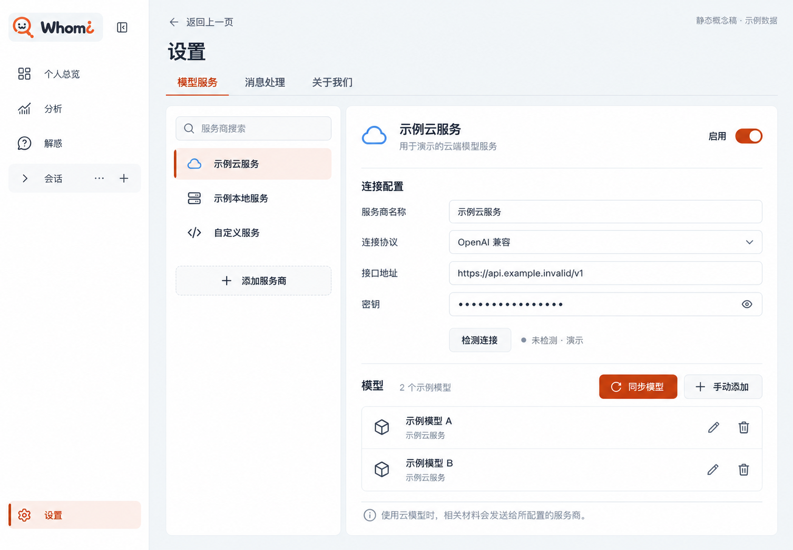

模型服务 · 修订

无图片时直接显示服务商名称；新增服务商可选择图片。预置清单等待用户提供。
A 专注分栏已选定。返回、关于whomi、服务商图片与数据说明已按标注修订，同一结构已应用到三个分类。
打开 A 方案独立交互预览 · 示例状态仅在内存中保留，不连接服务、不保存配置、不处理聊天数据。

无图片时直接显示服务商名称；新增服务商可选择图片。预置清单等待用户提供。

开关后展开相关参数，规则支持分组与部分选择。正式默认值与范围待确认。查看脱敏规则

简介改为一个了解你的程序，底部改为调试面板。开关仅展开演示信息，不接入真实调试或日志。
添加服务商与图片选择 · 模型选择弹窗 · 窄窗口详情
以下三张为生成概念稿，只保留构图比较；其中的图标、文案和示例状态已由上方修订替代。
设置分类、服务商列表和配置详情并列。进入设置时替换业务导航，返回后恢复来处。

适合：频繁切换服务商，或在三个设置分类间调整配置。代价：需要返回操作回到原业务页。
打开 A 大图三个设置分类移到顶部，下方是服务商列表与配置详情，给表单留出更多宽度。

适合：较窄的桌面窗口、长地址和模型名称。代价：顶部分类会占用部分纵向空间。
打开 B 大图保留客户端业务侧栏，设置工作区使用顶部分类，内部继续分为服务商和配置。

适合：希望随时辨认客户端位置的宽窗口。代价：横向区域较多，窄窗需要收起或顺序展示。
打开 C 大图设置分类和服务商始终可见，调整连接后能直接管理该服务商的模型；与参考产品的配置任务最贴近。独立评审更倾向 B：窗口较窄时，顶部分类给长地址和表单留出更多空间。
用户已明确选择 A，并补充四项标注。B、C 作为历史比较保留。
修订预览直接引用原始 Logo、Whomi 现有图标和颜色，服务商没有图片时只显示文字。
启用不等于检测通过。候选图没有表达实际保存行为；保存方式和开关默认值仍待确认。后续会将检测状态及云服务材料去向放到配置标题附近。